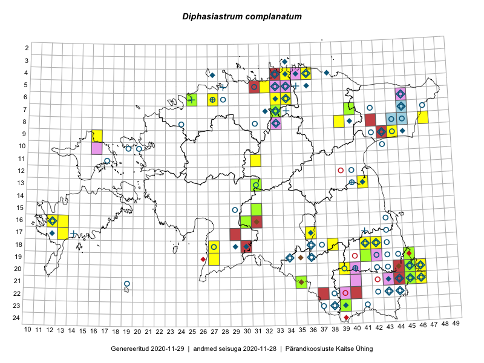

Diphasiastrum complanatum
Uuendatud: 2016-12-07
Kaardile koondatud taksonid: Diphasiastrum complanatum (L.) Holub; Diphasium complanatum (L.) Rothm.

Kaart põhineb 30 kirjel, neist vaatlusi 29 ja eksemplare 1. Taksonit on leitud 18 ruudust.
| Ruut | Vaatleja(d) | Vaatlusaeg | Kirje tüüp | Viide andmebaasikirjele |
|---|---|---|---|---|
| 06-33 | Rein Kalamees, Kersti Püssa | 2015-06-07 | ruut/ala | vaata PlutoFis |
| 06-33 | Rein Kalamees, Kersti Püssa | 2015-06-07 | punkt | vaata PlutoFis |
| 09-44 | Ott Luuk, Hannes Pehlak | 2015-07-24 | ruut/ala | vaata PlutoFis |
| 19-27 | Meeli Mesipuu, Indrek Tammekänd | 2015-07-14 | ruut/ala | vaata PlutoFis |
| 19-27 | Meeli Mesipuu, Indrek Tammekänd | 2015-07-14 | punkt | vaata PlutoFis |
| 07-33 | Jana-Maria Habicht, Ester Valdvee | 2015-05-01 | ruut/ala | vaata PlutoFis |
| 18-41 | Indrek Tammekänd | 2015-03-28 | punkt | vaata PlutoFis |
| 07-33 | Jana-Maria Habicht, Ester Valdvee | 2015-05-01 | punkt | vaata PlutoFis |
| 17-13 | Mari Reitalu, Maarja Nõmm | 2015-11-26 | punkt | vaata PlutoFis |
| 16-12 | Mari Reitalu, Triin Reitalu | 2015-07-20 | ruut/ala | vaata PlutoFis |
| 16-12 | Mari Reitalu, Maarja Nõmm | 2015-12-14 | punkt | vaata PlutoFis |
| 08-39 | Karin Kikas, Elle Rajandu | 2015-06-05 | ruut/ala | vaata PlutoFis |
| 08-39 | Elle Rajandu | 2015-08-14 | punkt | vaata PlutoFis |
| 17-36 | Helle Mäemets, Mare Leis | 2015-06-25 | ruut/ala | vaata PlutoFis |
| 20-45 | Kersti Püssa, Rein Kalamees | 2015-07-16 | ruut/ala | vaata PlutoFis |
| 08-47 | Thea Kull, Peedu Saar | 2014-07-26 | ruut/ala | vaata PlutoFis |
| 08-47 | Thea Kull, Peedu Saar | 2014-07-26 | punkt | vaata PlutoFis |
| 08-47 | Thea Kull, Peedu Saar | 2014-07-26 | punkt | vaata PlutoFis |
| 17-36 | Helle Mäemets, Malle Timm | 2015-07-15 | punkt | vaata PlutoFis |
| 20-46 | Meeli Mesipuu, Timo Luhamäe | 2016-06-14 | punkt | vaata PlutoFis |
| 19-45 | Toomas Kukk, Tiit Hallikma | 2016-06-17 | ruut/ala | vaata PlutoFis |
| 13-41 | Ulvi Selgis | 2016-07-06 | punkt | vaata PlutoFis |
| 21-35 | Toomas Kukk, Susanna Vain, Raivo Kalle | 2016-07-18 | ruut/ala | vaata PlutoFis |
| 06-27 | Erkki Otsman, Sergei Smirnov | 2016-07-12 | ruut/ala | vaata PlutoFis |
| 20-46 | Timo Luhamäe, Meeli Mesipuu | 2016-06-14 | ruut/ala | vaata PlutoFis |
| 16-13 | Mari Reitalu, Maris Sepp | 2016-05-29 | punkt | vaata PlutoFis |
| 06-27 | Erkki Otsman, Sergei Smirnov | 2016-07-12 | punkt | vaata PlutoFis |
| 06-27 | Erkki Otsman, Sergei Smirnov | 2016-07-12 | punkt | vaata PlutoFis |
| 11-31 | Toivo Sepp | 2014-07 | punkt | vaata PlutoFis |
| 07-33 | Jana-Maria Habicht | 2015-05-01 | eksemplar | vaata PlutoFis |